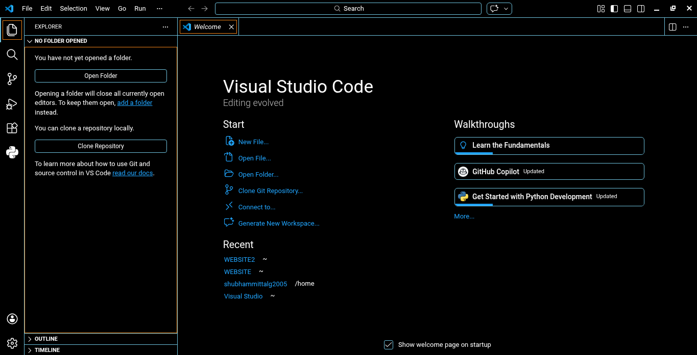
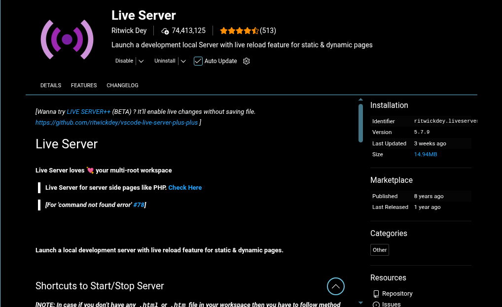
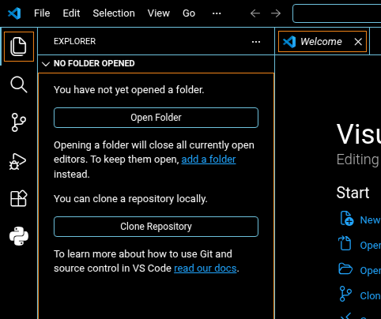
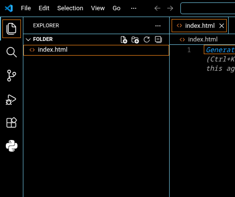

HTML Development Setup
Required Editor
To work with HTML professionally, you will use Visual Studio Code with the Live Server extension.
Download Visual Studio Code
Here is the installer matching your operating system.
-
macOS (Universal)
Download VS Code for macOS
Here is how it should look after installation

Required Extension
Install the Live Server extension inside VS Code to preview HTML files instantly in the browser.

Final Step of installation
Here we will test our first code
Firstly let's open a folder in our VS Code

After opening a suitable folder create a file named index.html in it and double click that file

All set to go
Now you are all set to start your coding journy in HTML just go ahead and start typing your first code.